One visual system, shared component owners
Pulse · Visual cohesion audit · October 9, 2026 · Local test app
The visual language exists. The next step is making it consistent and centrally maintained through shared components and a small number of named variants.
Full findings, code owners and acceptance criteria · Current source inventory
Recommended sequence
- Agree the reference sheet: shape, density, typography and action hierarchy.
- Buttons and fields: SOP annexes, AWI creation and Settings.
- Dialog styling and status badges, reusing the existing modal behavior.
- Headers, empty states and feedback across lists.
- Product and mobile compact/touch variants.
- Remove superseded styles and verify shared changes propagate.
Success: changing one family's styling updates all migrated callers; exceptions are explicit; functionality remains intact. These are baseline captures, not before/after implementation claims.
1. SOP document
Healthy layout; compare the rounded Draft badge and document fields with the list and Settings.
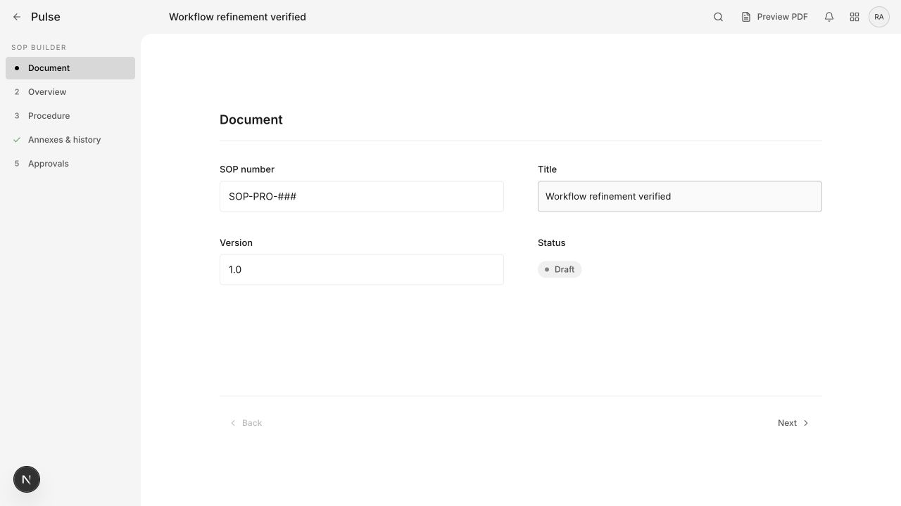
2. SOP annexes
Clear grouping. Local Add/Delete wrappers are candidates for shared action components; delete target measures 36×36px.
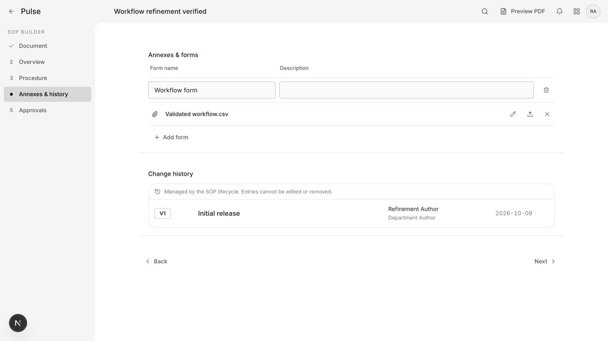
3. SOP list
Healthy table hierarchy. Draft differs from the editor; primary action provides a useful reference.
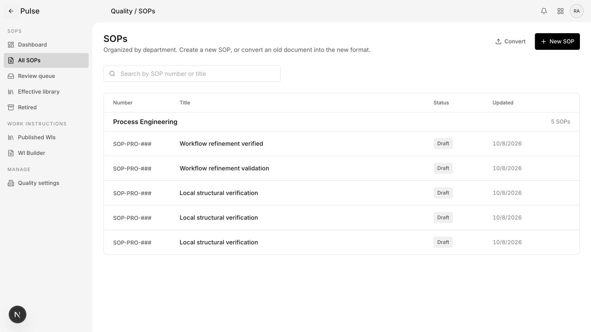
4. Confirmation
Shared confirmation already exists. Preserve its owner; standardize panel styling through explicit dialog variants.
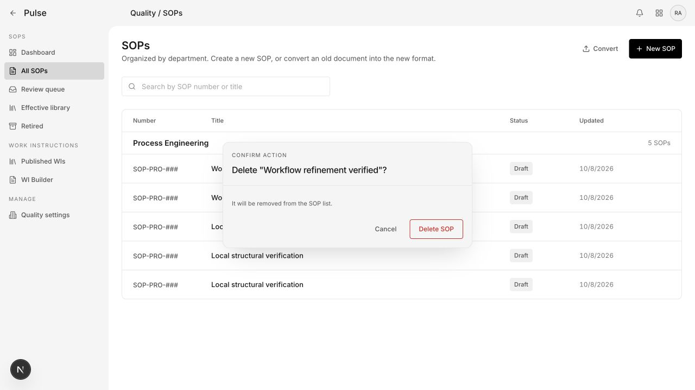
5. Settings
Clear sections; another field/label arrangement and subdued disabled-action treatment.
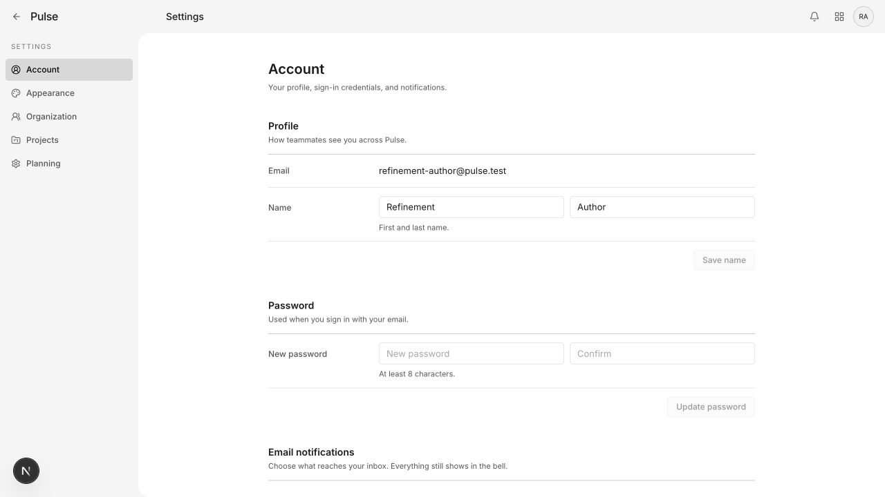
6. Settings at 390px
Reflows without page overflow. Horizontally scrolling section navigation merits discoverability testing.
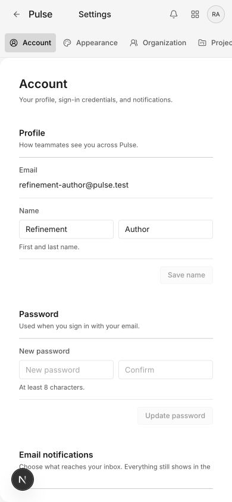
7. AWI empty state
Readable, but creation is a distant ghost action rather than a primary action in the empty state.

8. AWI creation
Title field: 36px high, 13px type, 12px corners. Shared control radius token is 4px.
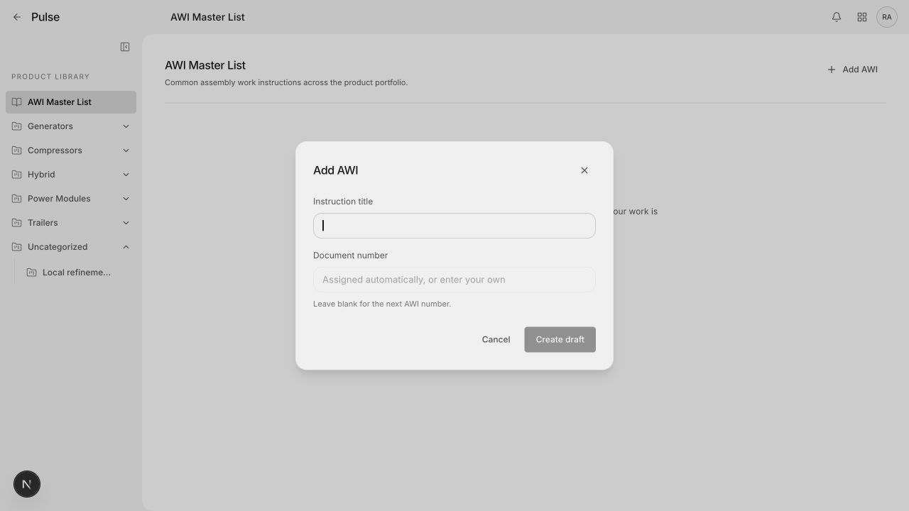
9. Planning empty state
Primary action appears in toolbar and empty state. Standardize empty-state composition and remove internal-system copy.
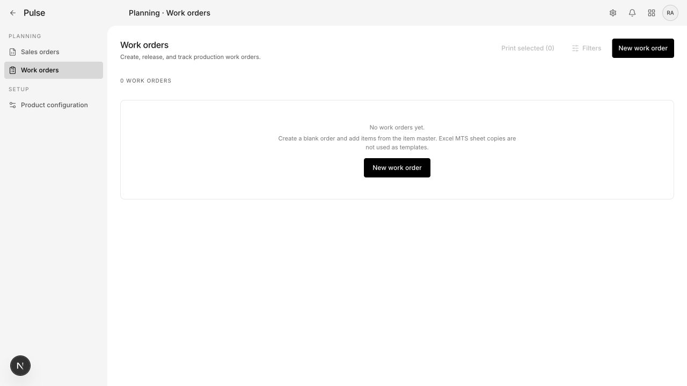
10. Product dashboard
Good information hierarchy; preserve dense data presentation while sharing notice/status/heading rules.
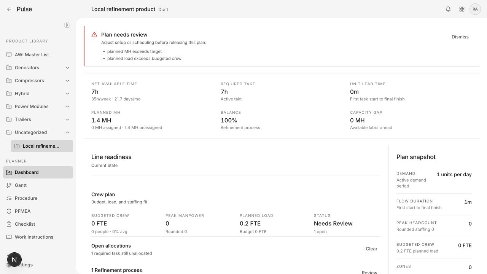
11. Product procedure
Dense specialized controls. Define compact-editor variants; do not enlarge every tool globally.
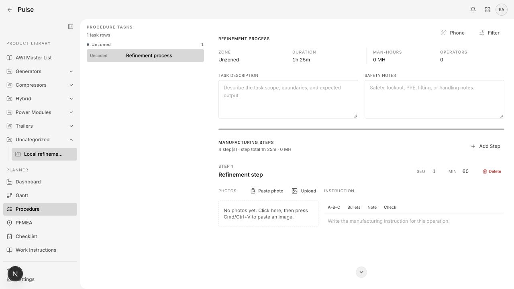
12. Mobile process
Touch-friendly expandable cards. Share control tokens while preserving touch sizing and capture behavior.
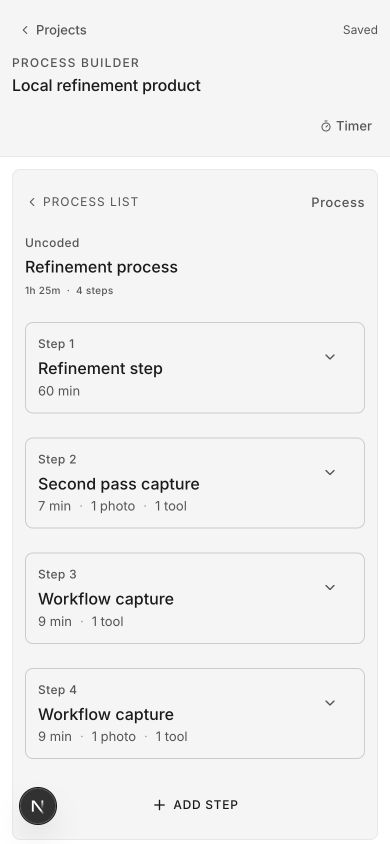
13. Mobile step
Uppercase camera/upload and separate field surfaces. Consolidate visual rules while retaining specialized input semantics.
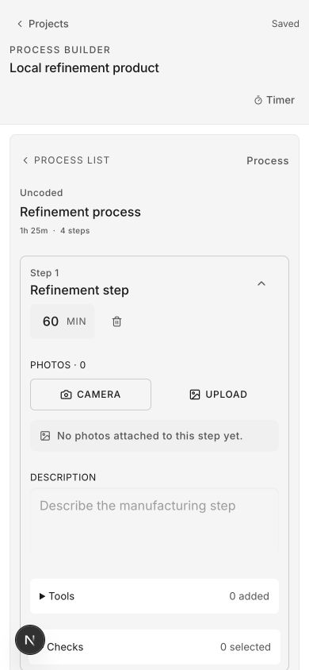
Coverage limits
Representative screenshots across six feature areas, not every route, theme, role or state. Dark mode, screen readers, contrast ratios, real-device capture and populated Planning tables need further checks during implementation. Source counts indicate adoption work, not numbers of different designs. No application source was changed. Only the isolated Docker test database was brought up to the existing migration; the hosted environment was untouched.